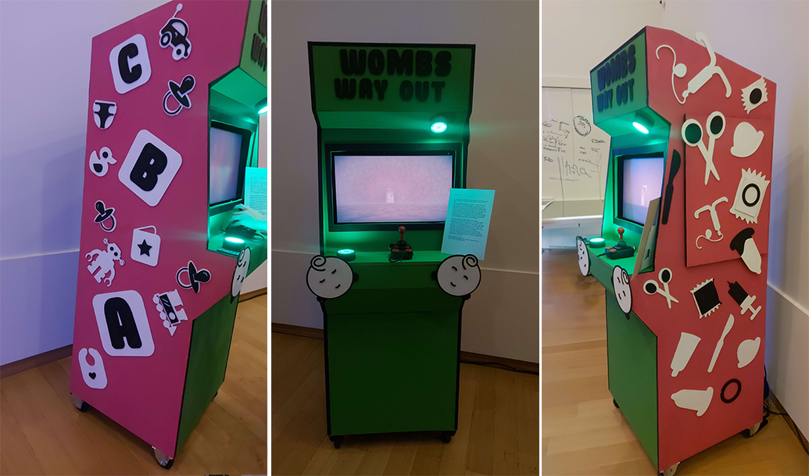
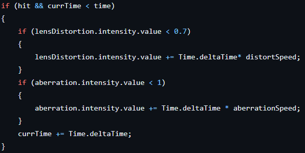
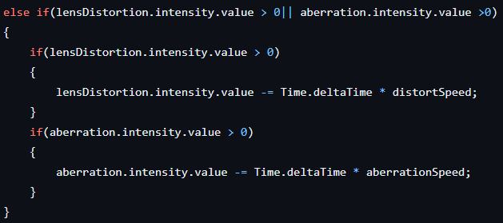

Womb's Way Out
The Project
For this project we were tasked to make a game with the theme serious humor which means it has a serious subject with a funny twist.
Me and my group chose the subject abortion and the joke would be exaggerated features.
The game was a maze type 3d first person horror game meant to be played with a joystick and two buttons.
The game has 3 enemies:

This enemy kills you on touch

This enemy adds a distortion effect to your screen and inverts your inputs

This enemy adds a fog effect to your screen
My Part
My work
In this game I worked on the enemy effects this means that I wrote the code that handelt the post processing that would change depending on which enemy you got hit by.
Working in unity I also made the level and decorations for the end level and hook room.
The last part of developer work I did was making the endings and implamenting the animations.
I also worked as git master and generaly helped every member of the team with their git flow.
My code
Here are some snippets of code that I wrote with some explanations underneath. This is some code that I made some time ago and I would have made it much better now. I would simply make all of this code in IEnumerators instead of the update loop. Then change the if statements to a while loop and start a different IEnumerator to lower the value again. This would make it so the code only gets run when it is needed. For the cigarette enemy I would do the same and check for hit in the enemy then trigger a coroutine to start the smoke effect.
Lens distortion fade in
In this script I made an if statement that checks if the bottle enemy has been hit and then changes some variable on the post processing.
Lens distortion fade out
 0|| aberration.intensity.value >0) { if(lensDistortion.intensity.value > 0) { lensDistortion.intensity.value -= Time.deltaTime * distortSpeed; } if(aberration.intensity.value > 0) { aberration.intensity.value -= Time.deltaTime * aberrationSpeed; } } ">This peace of code checks if the effect should be deactivated and if so slowly does that.
Smoke fade in

This code first checks if it was hit by the cigarette enemy and if so increases the smoke effect and makes the color white.
Smoke fade out

This code checks if the smoke effect had been active long enough and then changes the smoke back to red.